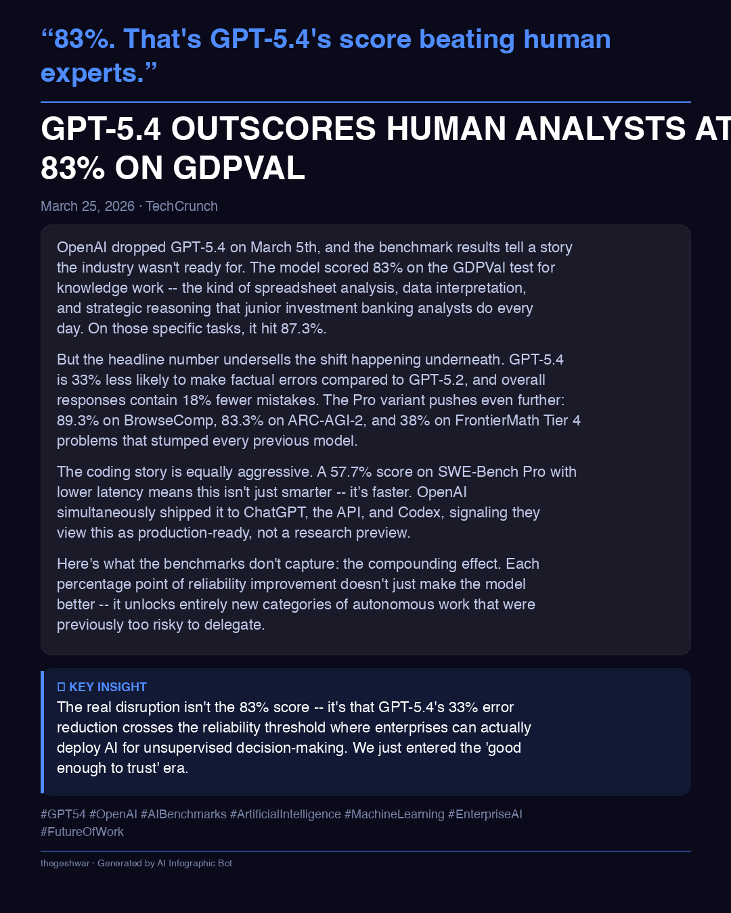
"83%. That's GPT-5.4's score beating human experts."
The real disruption isn't the 83% score -- it's that GPT-5.4's 33% error reduction crosses the reliability threshold where enterprises can actually deploy AI for unsupervised decision-making. We just
The benchmark wars are over. The reliability war just started. GPT-5.4 didn't just beat human experts on knowledge work tasks -- it did it while making 33% fewer errors than its predecessor. That error reduction matters more than any leaderboard score. Why? Because enterprises don't deploy AI based on peak performance. They deploy based on worst-case reliability. And GPT-5.4 just moved the floor up significantly. The question isn't whether AI can do your job. It's whether your job description just quietly changed. What's the first knowledge work task you'd trust to an 83%-accurate AI? Drop it below.
Source: TechCrunch
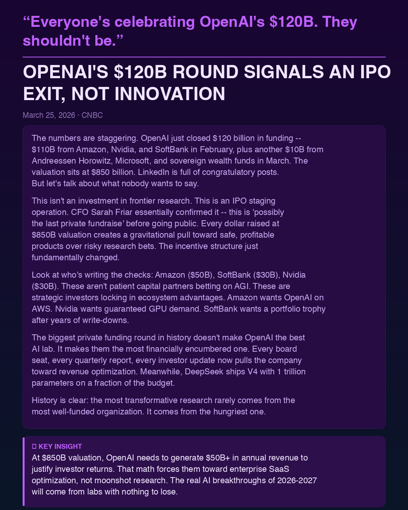
"Everyone's celebrating OpenAI's $120B. They shouldn't be."
At $850B valuation, OpenAI needs to generate $50B+ in annual revenue to justify investor returns. That math forces them toward enterprise SaaS optimization, not moonshot research. The real AI breakthr
Hot take: OpenAI's $120 billion round is the beginning of the end of OpenAI as a research leader. I know that sounds dramatic. But follow the money. When your valuation hits $850B and your investors include Amazon, SoftBank, and sovereign wealth funds -- you're no longer optimizing for breakthrough research. You're optimizing for quarterly revenue growth and an IPO roadshow. Meanwhile, DeepSeek just shipped a 1T parameter model. AMI Labs raised $1B in Europe to build world models. The frontier is moving to labs that can afford to take risks. The most dangerous position in tech isn't being underfunded. It's being so overfunded that you can't afford to fail. Agree or disagree? I want to hear your take.
Source: CNBC
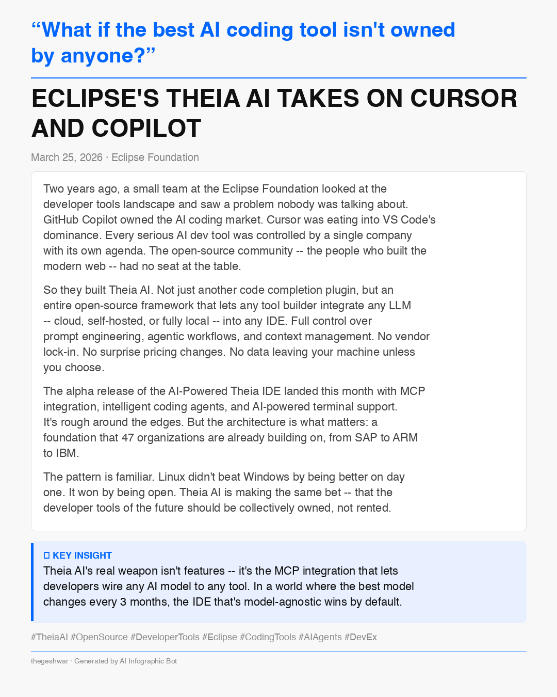
"What if the best AI coding tool isn't owned by anyone?"
Theia AI's real weapon isn't features -- it's the MCP integration that lets developers wire any AI model to any tool. In a world where the best model changes every 3 months, the IDE that's model-agnos
The AI coding tools market is about to get its 'Linux moment.' Theia AI just dropped as a fully open-source alternative to Cursor and GitHub Copilot. And it's backed by the Eclipse Foundation -- the same org behind enterprise Java tooling used by millions. Here's why this matters for every developer: the ability to plug in ANY model (cloud, local, self-hosted), control your own prompt engineering, and own your data. No vendor lock-in. 47 organizations including SAP, ARM, and IBM are already building on the framework. Is open-source the future of AI dev tools, or will the proprietary players stay too far ahead? Curious what you think.
Source: Eclipse Foundation
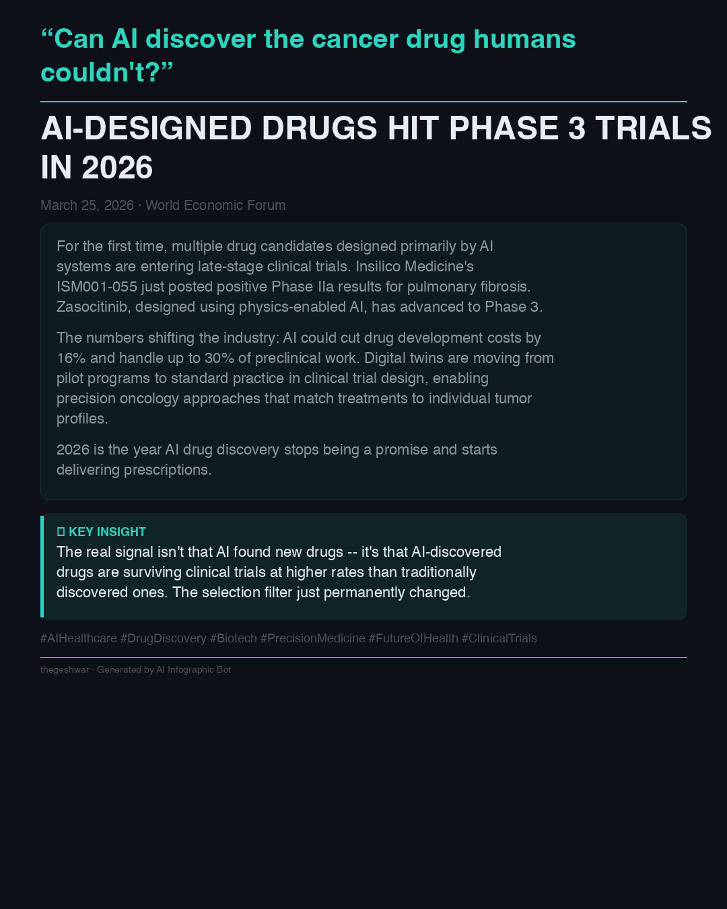
"Can AI discover the cancer drug humans couldn't?"
The real signal isn't that AI found new drugs -- it's that AI-discovered drugs are surviving clinical trials at higher rates than traditionally discovered ones. The selection filter just permanently c
What if the biggest AI story of 2026 isn't chatbots or image generators -- but a cancer drug? For the first time ever, AI-designed drug candidates are reaching Phase 3 clinical trials. Not as a novelty. As the new standard. Digital twins modeling individual patients. AI handling 30% of preclinical work. Drug development costs dropping 16%. We spend so much time debating AI's impact on knowledge work. But the most profound impact might be measured in lives saved, not jobs displaced. What AI application excites you most outside of tech? I'd love to hear.
Source: World Economic Forum
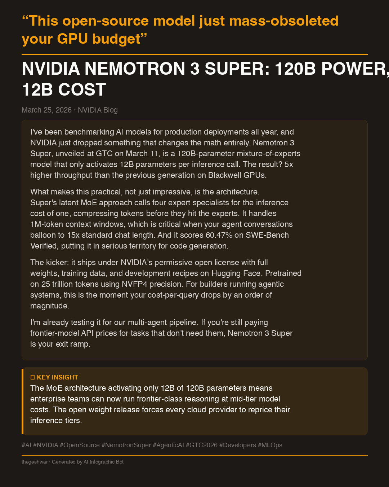
"This open-source model just mass-obsoleted your GPU budget"
The MoE architecture activating only 12B of 120B parameters means enterprise teams can now run frontier-class reasoning at mid-tier model costs. The open weight release forces every cloud provider to
NVIDIA just made running 120B-parameter models affordable for every dev team. Nemotron 3 Super activates only 12B of its 120B parameters per call. 5x throughput. 1M-token context. Open weights on Hugging Face. For anyone building agentic AI systems, this is the inflection point where you stop choosing between quality and cost. The open-source AI stack just leveled up. Who's already testing it?
Source: NVIDIA Blog
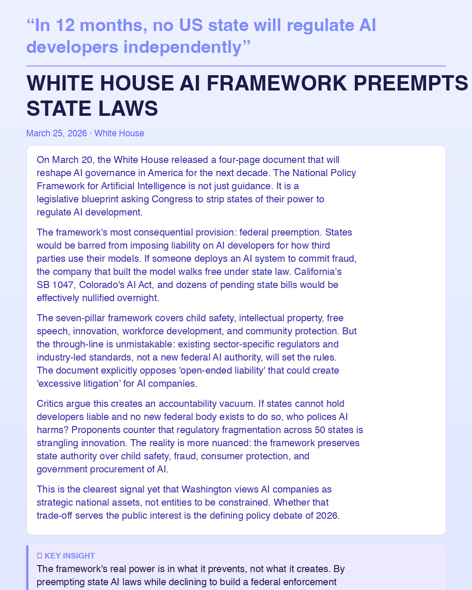
"In 12 months, no US state will regulate AI developers independently"
The framework's real power is in what it prevents, not what it creates. By preempting state AI laws while declining to build a federal enforcement body, Washington is constructing a regulatory vacuum
The White House just told 50 states to stop regulating AI developers. Its new National Policy Framework asks Congress to preempt state AI laws, shield developers from third-party misuse liability, and rely on industry self-governance instead of a new federal authority. Child safety gets a carve-out. Innovation gets a blank check. Accountability gets... a question mark. This four-page document will shape AI law for the next decade. The question is: who does the accountability vacuum actually serve? What's your read on federal preemption of state AI laws?
Source: White House
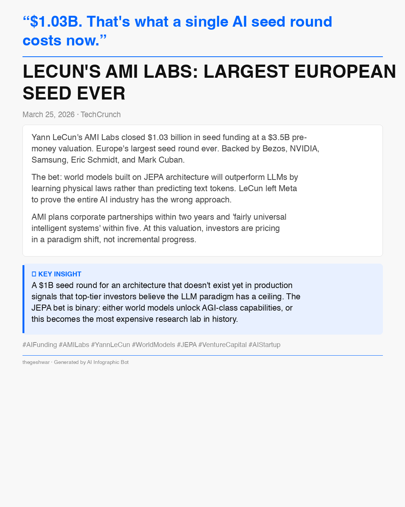
"$1.03B. That's what a single AI seed round costs now."
A $1B seed round for an architecture that doesn't exist yet in production signals that top-tier investors believe the LLM paradigm has a ceiling. The JEPA bet is binary: either world models unlock AGI
$1.03 billion. Seed round. Four months old. Yann LeCun just raised the largest seed in European history to prove that LLMs are the wrong path to intelligence. AMI Labs is building world models on JEPA architecture: AI that learns physics, not just predicts text. Is this the most important funding round of 2026, or the most expensive contrarian bet in tech history?
Source: TechCrunch
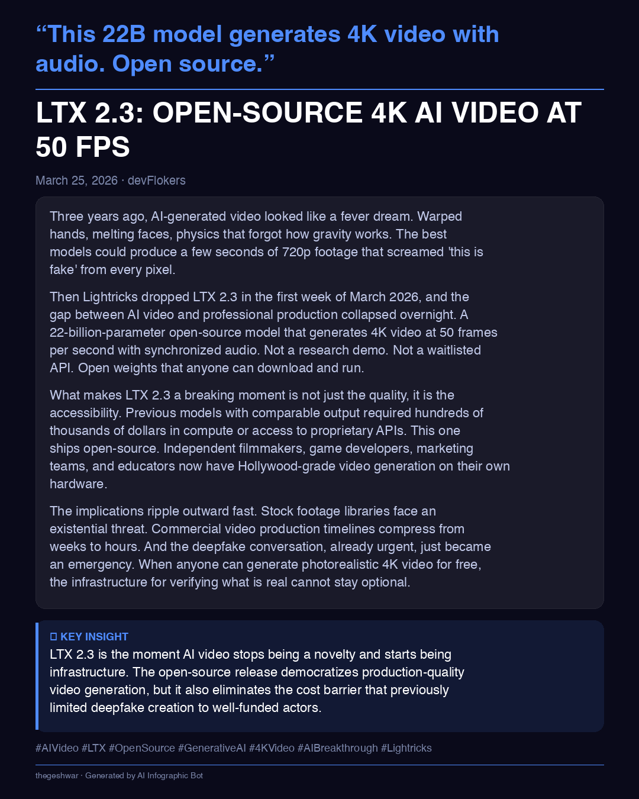
"This 22B model generates 4K video with audio. Open source."
LTX 2.3 is the moment AI video stops being a novelty and starts being infrastructure. The open-source release democratizes production-quality video generation, but it also eliminates the cost barrier
Three years from fever dreams to 4K masterpieces. LTX 2.3 is a 22B open-source model that generates 4K video at 50 FPS with synchronized audio. Not behind an API. Not gated. Fully open weights. This changes everything for filmmakers, game devs, and creators. It also changes everything for deepfakes. The tools are free now. The question is whether our verification infrastructure can keep up. What's your take: creative revolution or verification crisis?
Source: devFlokers
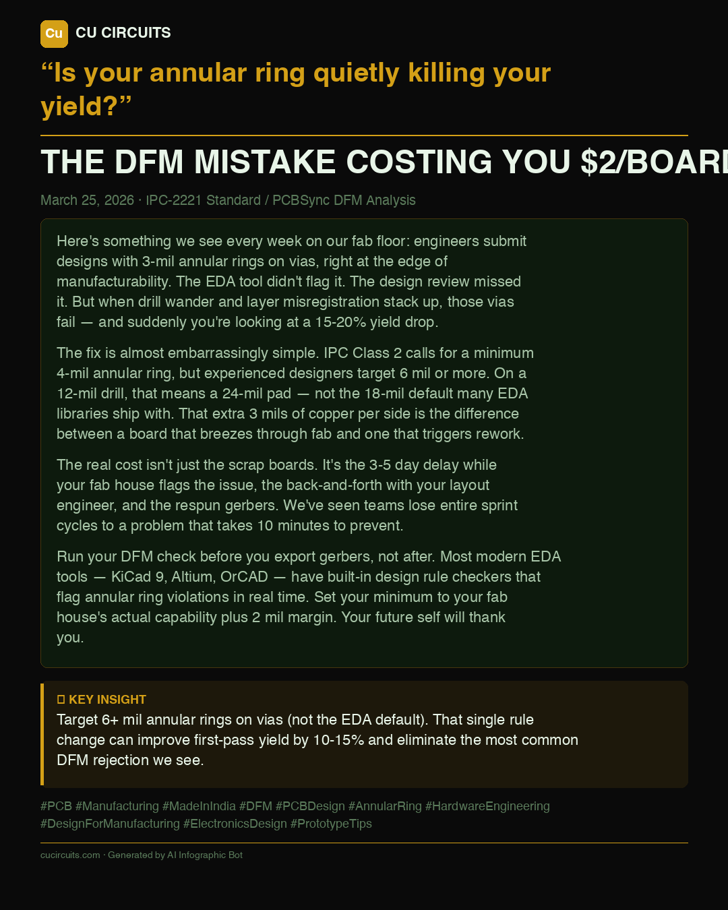
"Is your annular ring quietly killing your yield?"
Target 6+ mil annular rings on vias (not the EDA default). That single rule change can improve first-pass yield by 10-15% and eliminate the most common DFM rejection we see.
This is the single most common DFM issue we flag at CU Circuits — and it's 100% preventable. Every week we see designs come in with annular rings right at the minimum. The designer's EDA tool said it was fine. But stack up drill wander, etch compensation, and layer misregistration, and suddenly your via reliability craters. Quick rule of thumb: take your fab house's minimum annular ring spec and add 2 mil. That's your new design rule. What's the most frustrating DFM rejection you've dealt with? Drop it in the comments — let's build a checklist together.
Source: IPC-2221 Standard / PCBSync DFM Analysis
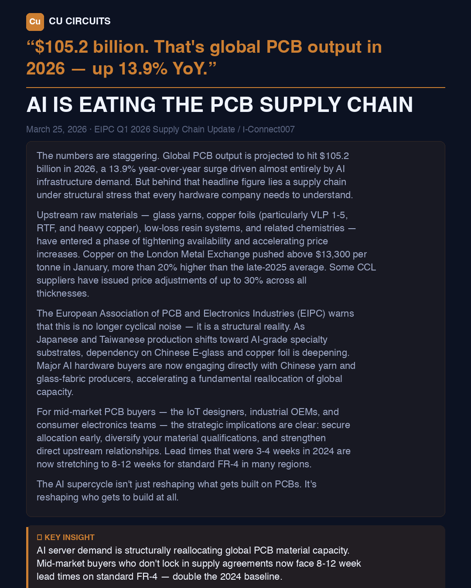
"$105.2 billion. That's global PCB output in 2026 — up 13.9% YoY."
AI server demand is structurally reallocating global PCB material capacity. Mid-market buyers who don't lock in supply agreements now face 8-12 week lead times on standard FR-4 — double the 2024 basel
The AI boom isn't just a software story — it's rewriting the rules of hardware supply chains. Global PCB output is surging to $105.2B in 2026, but behind that growth lies a materials squeeze that's hitting everyone from hyperscalers to small-batch prototype shops. Copper foil prices up 20%+. CCL suppliers issuing 30% price hikes. Lead times doubling. At CU Circuits, we're seeing these pressures firsthand — and working to keep our customers ahead of the curve by maintaining material buffers and diversified sourcing. Three questions for hardware leaders: 1. Have you locked in material allocation for H2 2026? 2. Are your designs qualified for alternative laminates? 3. When did you last audit your fab partner's supply chain? The teams answering these questions now will ship on time. The rest will learn the hard way.
Source: EIPC Q1 2026 Supply Chain Update / I-Connect007
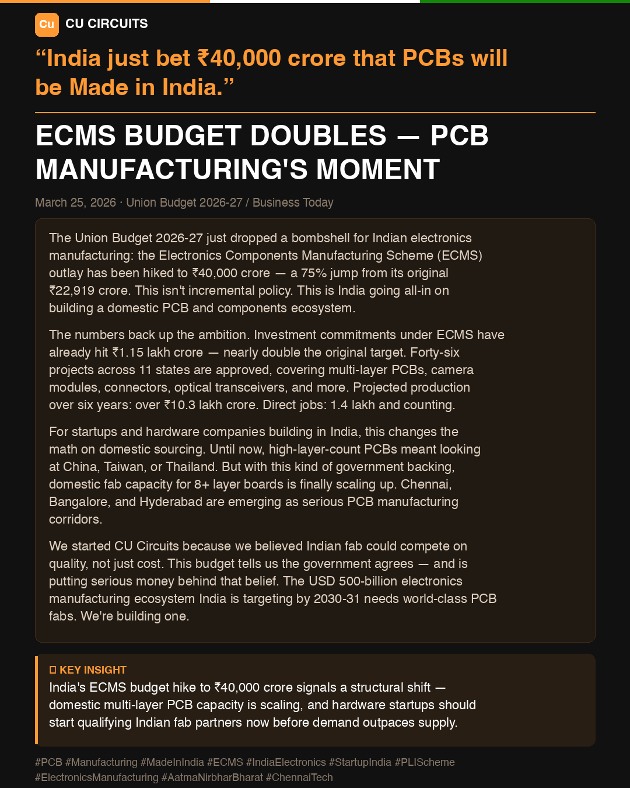
"India just bet ₹40,000 crore that PCBs will be Made in India."
India's ECMS budget hike to ₹40,000 crore signals a structural shift — domestic multi-layer PCB capacity is scaling, and hardware startups should start qualifying Indian fab partners now before demand
₹40,000 crore. That's not a typo — that's India's new bet on domestic electronics component manufacturing. The ECMS outlay just got a 75% boost in the Union Budget, and multi-layer PCBs are right at the center of it. Investment commitments have already crossed ₹1.15 lakh crore. At CU Circuits, this is the moment we've been building toward. Indian PCB fab isn't just catching up — it's gearing up to compete globally. Are you sourcing PCBs domestically yet? If not, what's holding you back? Let's talk about it.
Source: Union Budget 2026-27 / Business Today
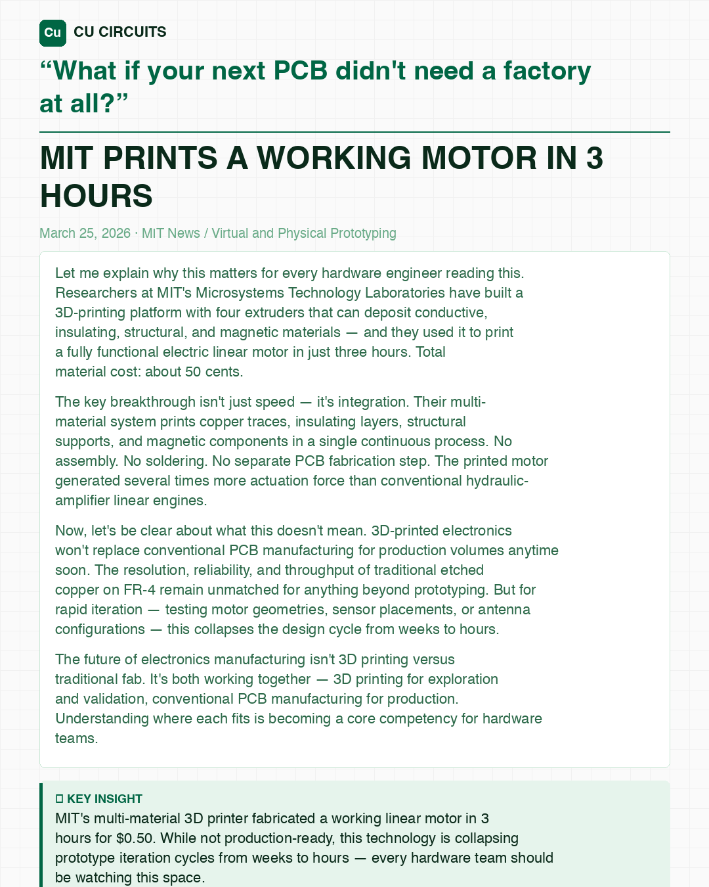
"What if your next PCB didn't need a factory at all?"
MIT's multi-material 3D printer fabricated a working linear motor in 3 hours for $0.50. While not production-ready, this technology is collapsing prototype iteration cycles from weeks to hours — every
A working electric motor. 3D printed. Three hours. Fifty cents in materials. MIT's Microsystems Technology Lab just demonstrated something that should be on every hardware engineer's radar: a multi-material 3D printing platform that prints conductive traces, insulation, structural parts, and magnetics in one continuous process. This won't replace your PCB fab line (the physics of etched copper on FR-4 is still king for production). But for prototyping — testing geometries, validating concepts, iterating on sensor placements — this is a paradigm shift. At CU Circuits, we see 3D printing and traditional PCB fab as complementary tools. Prototype fast, then manufacture right. What emerging manufacturing tech are you most excited about? Share below.
Source: MIT News / Virtual and Physical Prototyping
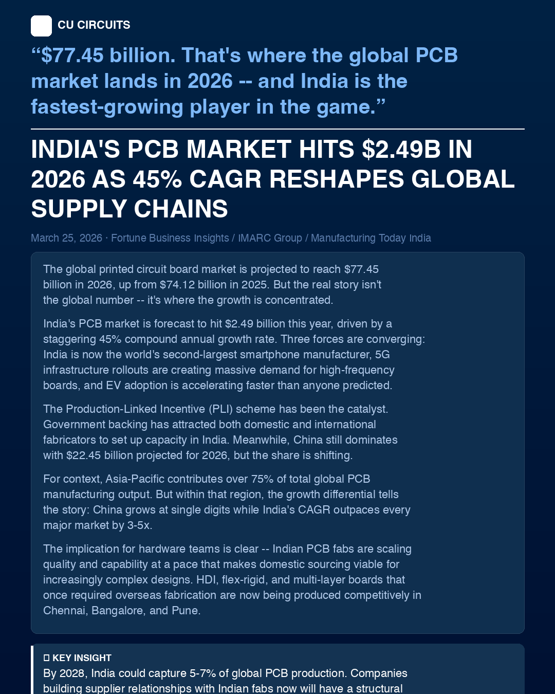
"$77.45 billion. That's where the global PCB market lands in 2026 -- and India is the fastest-growing player in the game."
By 2028, India could capture 5-7% of global PCB production. Companies building supplier relationships with Indian fabs now will have a structural cost and lead-time advantage.
The numbers don't lie. India's PCB market is growing at 45% CAGR while the global market averages 6.65%. That's not a rounding error -- it's a structural shift in where the world's circuit boards get made. Three years ago, sourcing PCBs from India meant compromises. Today, Indian fabs are producing HDI boards, flex-rigid assemblies, and 8+ layer stacks that compete on quality with established Asian hubs. The $2.49 billion figure for 2026 is just the beginning. With PLI incentives, growing EV demand, and 5G rollouts, India is positioned to become a top-5 PCB manufacturing nation by the end of this decade. The question isn't whether to consider Indian PCB partners. It's whether you can afford not to. #PCBManufacturing #MakeInIndia #ElectronicsManufacturing #PCBIndustry #IndiaManufacturing #SupplyChain
Source: Fortune Business Insights / IMARC Group / Manufacturing Today India
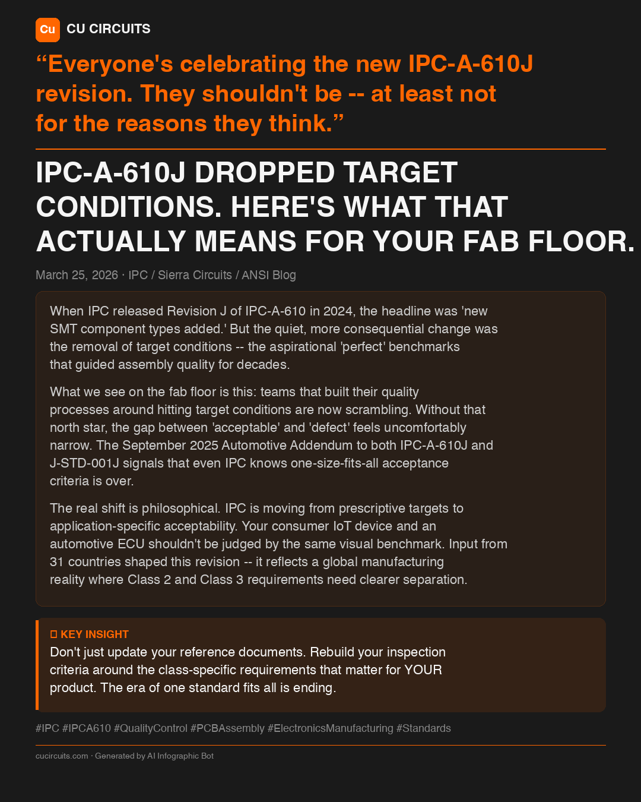
"Everyone's celebrating the new IPC-A-610J revision. They shouldn't be -- at least not for the reasons they think."
Don't just update your reference documents. Rebuild your inspection criteria around the class-specific requirements that matter for YOUR product. The era of one standard fits all is ending.
IPC-A-610J removed target conditions. Most people shrugged. They shouldn't have. Target conditions were the 'gold standard' images that every inspector compared their boards against. Without them, quality becomes about understanding class-specific requirements deeply -- not just pattern-matching against a photo. If your inspection team hasn't retrained on Revision J, now is the time. #IPC #IPCA610 #QualityControl #PCBAssembly #ElectronicsManufacturing #Standards
Source: IPC / Sierra Circuits / ANSI Blog
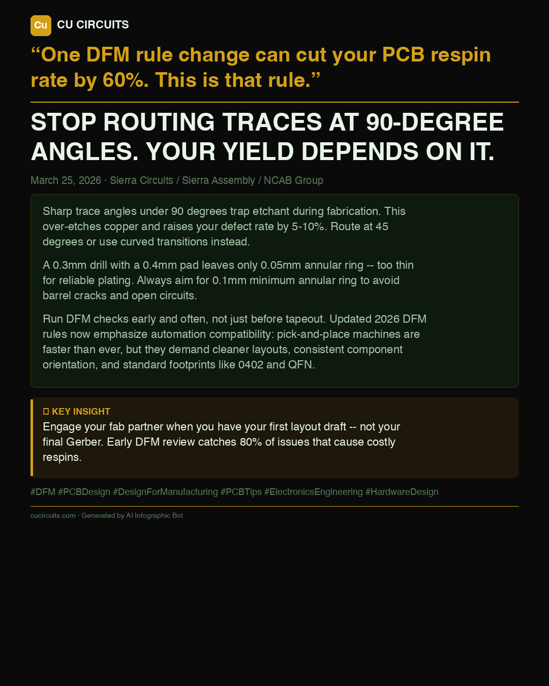
"One DFM rule change can cut your PCB respin rate by 60%. This is that rule."
Engage your fab partner when you have your first layout draft -- not your final Gerber. Early DFM review catches 80% of issues that cause costly respins.
Three DFM rules. Zero excuses. Route at 45 degrees. Keep annular rings above 0.1mm. Run DFM checks before your first review, not after your last respin. Simple changes. Massive yield improvements. #DFM #PCBDesign #DesignForManufacturing #PCBTips #ElectronicsEngineering #HardwareDesign
Source: Sierra Circuits / Sierra Assembly / NCAB Group
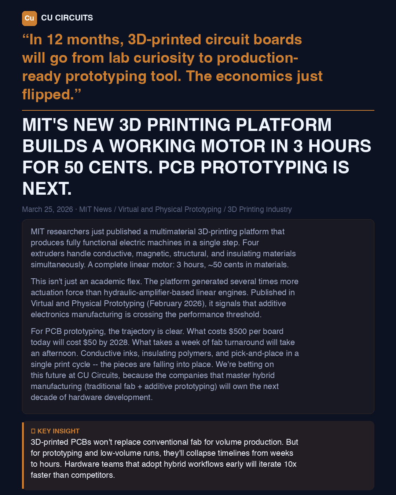
"In 12 months, 3D-printed circuit boards will go from lab curiosity to production-ready prototyping tool. The economics just flipped."
3D-printed PCBs won't replace conventional fab for volume production. But for prototyping and low-volume runs, they'll collapse timelines from weeks to hours. Hardware teams that adopt hybrid workflow
MIT just 3D-printed a working electric motor. Three hours. Fifty cents. We're watching additive electronics manufacturing cross from 'interesting research' to 'we need to integrate this.' The multimaterial platform handles conductive, magnetic, and structural materials in a single print run. At CU Circuits, we see this as the future of rapid prototyping. Traditional PCB fab isn't going anywhere for production runs -- but the prototype-to-test cycle is about to get radically faster. The hybrid manufacturing era is starting. Are you building for it? #3DPrinting #AdditiveManufacturing #PCBPrototyping #MIT #ElectronicsInnovation #HardwareDev
Source: MIT News / Virtual and Physical Prototyping / 3D Printing Industry